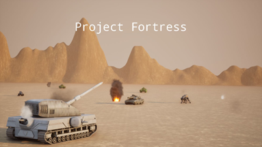

3D · Co-op · First Person · Unreal

외부와 차단된 거대한 요새 속에서 팀원들과 협동하여 목적지까지 안전하게 도달하는 것이 목표입니다.
요새의 운전, 수리, 장전, 조준 등 모든 조작을 플레이어들이 분담하여 진행해야 하므로 쉴 새 없이 움직여야 합니다.
Steam OSS를 이용한 멀티플레이 기능을 지원하며, 자신의 Steam 계정 친구들을 초대할 수 있습니다.
또한, 보이스 챗을 지원하기 때문에 팀원들과 실시간으로 소통하며 플레이 할 수 있습니다!